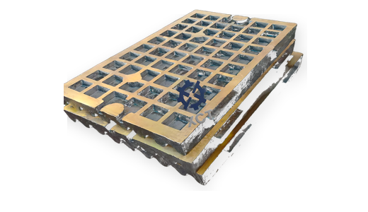

Fixed and movable jaw plates
Jaw plate selection depends on feed size, abrasiveness, crushing ratio and tooth profile. Send photos of the old jaw surface if the profile name is uncertain.
C125 replacement parts
XCT Mining quotes aftermarket C125 style jaw crusher replacement parts from part numbers, drawings, samples or used-part photos for quarry and mining maintenance teams.
Metso, Nordberg and other names are used only for compatibility identification. XCT Mining supplies independent aftermarket replacement parts.

Jaw plate selection depends on feed size, abrasiveness, crushing ratio and tooth profile. Send photos of the old jaw surface if the profile name is uncertain.
Cheek plate and side liner quotes should include thickness, hole layout and old-part photos to confirm fit before production.
Retaining wedges and related hardware can be reviewed together with jaw plates so maintenance teams receive a more complete changeout package.
XCT can discuss manganese grade and heat treatment based on site duty, expected life and the buyer's current wear problem.
Common RFQ terms
Clear part names and photos reduce back-and-forth when the exact part number is missing.
Buyer FAQ
Jaw plate material depends on granite or ore hardness, abrasiveness, feed size, impact, tooth profile and the current service life at site.
Yes. Many buyers quote cheek plates, wedges and related retaining hardware with fixed and movable jaw plates for a complete changeout package.
They are used only to identify compatible replacement applications. XCT Mining is independent and does not claim OEM authorization or affiliation.